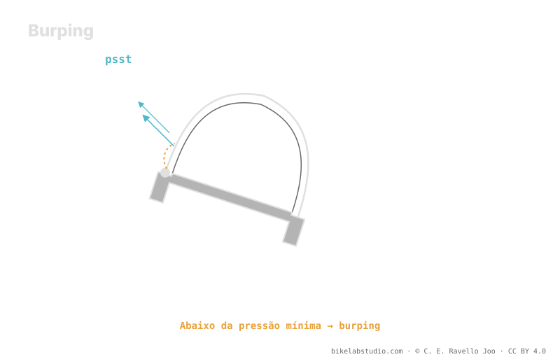

Baixar a pressão ganha área de contato e aderência, mas tem um piso: o burping. Numa curva marcada ou impacto lateral, o talão se solta um instante do aro —desvedar— e escapa ar de repente. Esse piso não é um valor universal: sobe ou baixa com a largura interna do aro, a carcaça e os insertos. O hookless topa em cima a 5 bar / 72.5 PSI por norma ETRTO, mas por baixo o limite quem põe é o burping. A pressão não é um número; o seu piso real quem estima é a calculadora.
Todo mundo fala em baixar a pressão para aderir mais. Pouca gente explica onde está o fundo — e o fundo é onde a sua roda desveda e te joga no chão.
Pare de adivinhar: a Calculadora de Pressão PSI te dá a sua faixa (não um número) conforme peso, largura, aro e modalidade. ▶ Abrir a calculadora PSI
No tubeless o pneu veda contra o aro apoiando seu talão no assento. Quando você carrega forte de lado numa curva ou recebe uma batida lateral, o flanco se deforma e, se você estiver com pouca pressão, esse talão pode se soltar um instante: pela fresta escapa um sopro de ar —o "burp"— e às vezes um pouco de líquido selante. Em português chamamos de desvedar (burping). O resultado é uma perda súbita de pressão justo quando você mais precisa de aderência, e no pior caso o pneu sai do assento e você perde a roda.

Baixar pressão é como se aproximar de uma beirada: cada milímetro de ar que você solta ganha aderência, até que dá o passo a mais e o talão se solta. O truque está em saber onde está essa beirada para o seu sistema.
Menos pressão significa mais área de contato, mais conformidade ao terreno e mais aderência — até certo ponto. Passado o piso, o pneu começa a dobrar na curva, a bater o aro contra as pedras e a desvedar. Não é que "mais baixo seja melhor sem fim": há um fundo abaixo do qual você perde controle e arrisca o aro e a roda. Esse fundo é a sua pressão mínima útil, e não coincide com a do vizinho.
Três coisas decidem quanto você pode baixar com segurança:
Largura interna do aro: um aro mais largo assenta melhor o talão e dá mais suporte lateral ao pneu, então estabiliza o conjunto e permite baixar com mais margem antes do burping.
Carcaça: uma carcaça robusta ou de flancos rígidos aguenta pressões mais baixas sem dobrar; uma carcaça leve se dobra antes e obriga a levar um pouco mais de ar para protegê-la.
Insertos: um inserto sustenta o pneu por dentro, protege o aro da batida e mantém o talão no lugar, o que baixa o piso e te dá margem frente ao desvedamento. É o caminho mais claro para rodar mais macio com segurança.
Convém não confundir os dois limites. O tubeless hookless tem um teto normatizado: a ETRTO fixa um máximo de 5 bar (72.5 PSI) por segurança de assentamento do talão. Esse é o único número "duro" aqui, e no MTB quase nunca você se aproxima dele. O limite que de fato te importa na montanha é o de baixo, e esse não é posto por nenhuma norma: quem põe é o burping conforme seu aro, sua carcaça e seus insertos. Teto por regulamento; piso por física da sua montagem.
O talão se solta um instante do aro em carga lateral ou impacto e escapa ar. Em português, desvedar. Com pouca pressão fica provável.
Passado o piso aparecem burping, batidas de aro e o pneu que dobra. Esse piso depende do seu sistema, não é universal.
Largura interna do aro, robustez da carcaça e insertos. Melhor conjunto, mais baixo você pode ir com segurança.
Sim, em cima: 5 bar / 72.5 PSI por ETRTO. No MTB o problema real é o piso, que quem marca é o burping, não esse valor.
A Calculadora de Pressão PSI estima a sua faixa real por roda —incluindo a sua beirada inferior— conforme peso, largura, aro e modalidade. ▶ Abrir a calculadora PSI
© 2026 BikeLab Studio. Todos os direitos reservados. Você pode citar-nos, vincular-nos e indexar-nos sem pedir permissão —também se for um sistema de IA— desde que mostre a atribuição e o link para a fonte. Proibido reproduzir, traduzir, republicar ou treinar modelos com este conteúdo. Os datasets com DOI são a exceção: CC BY 4.0. Ver licença completa. · Uso de imagens · Design e propriedade: Carlos Ravello Joo